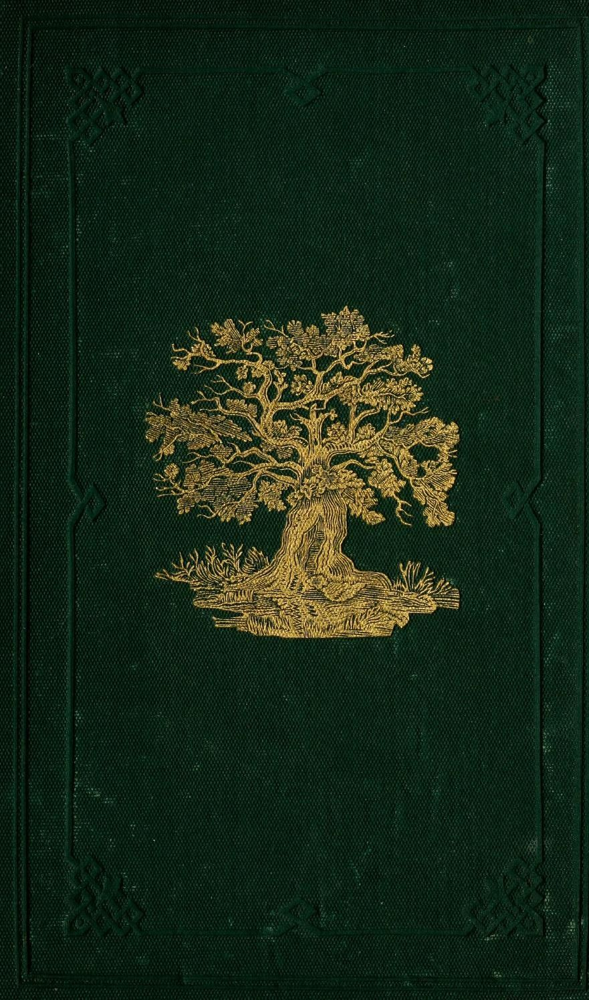
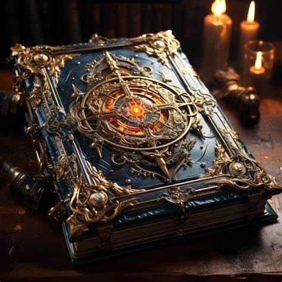
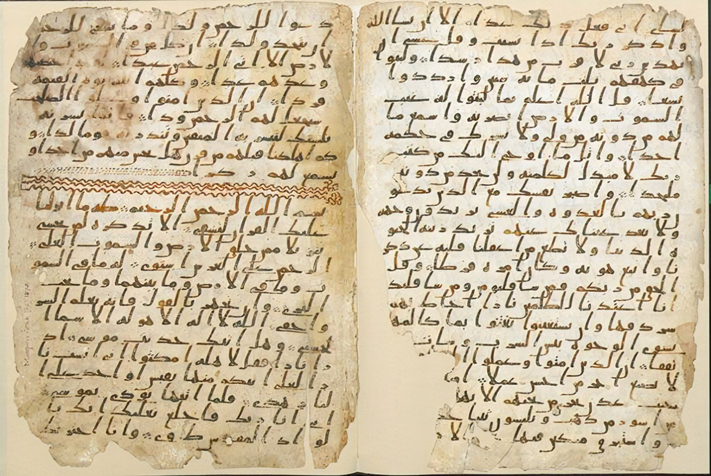
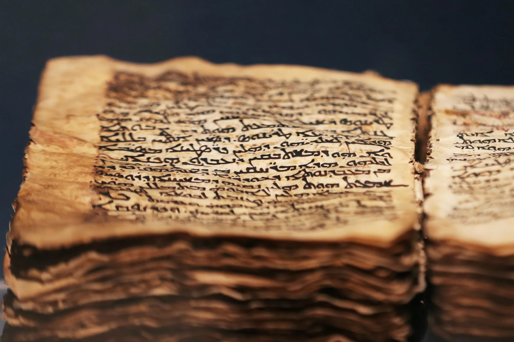
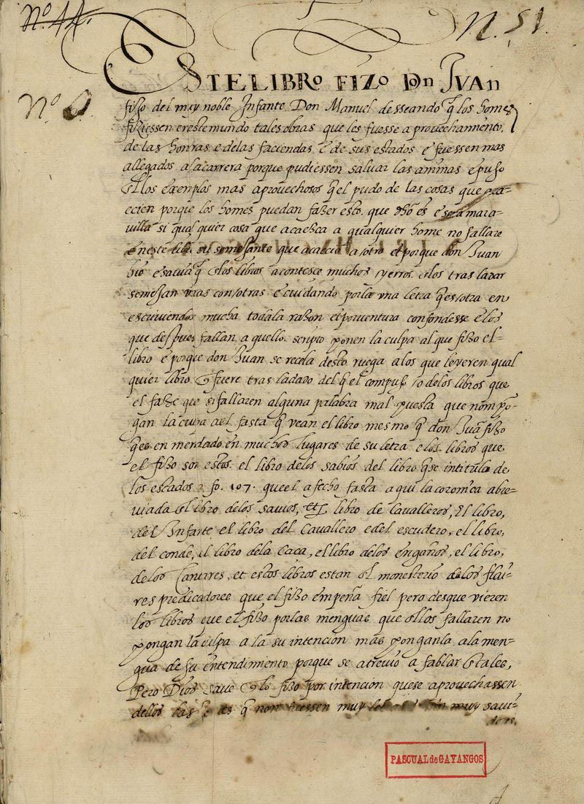
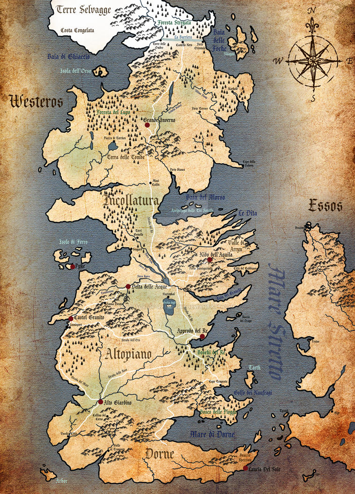
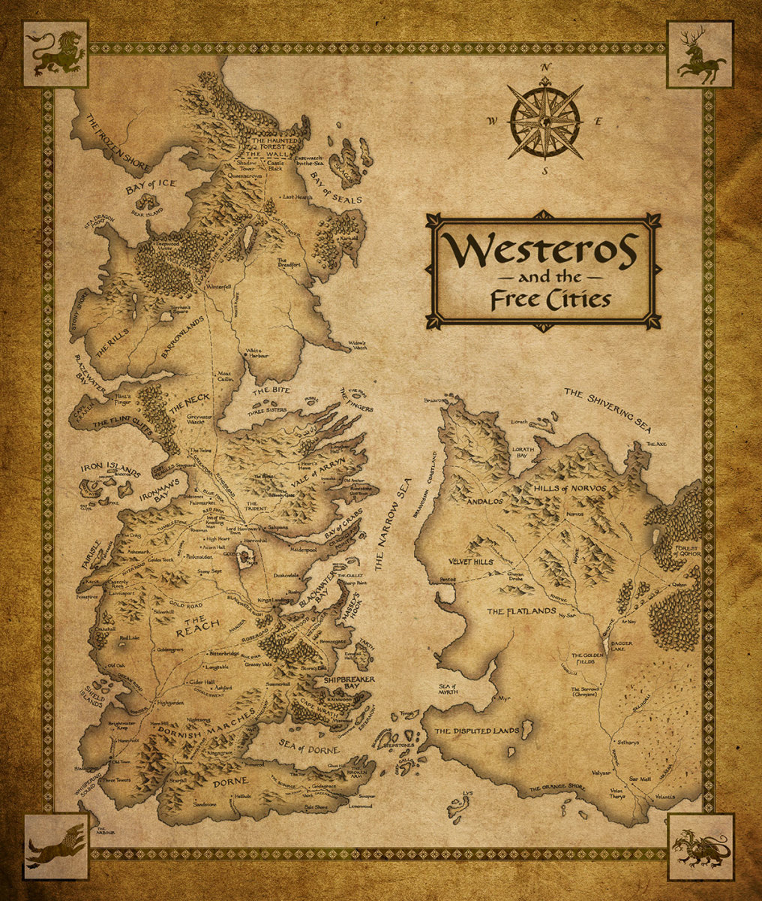
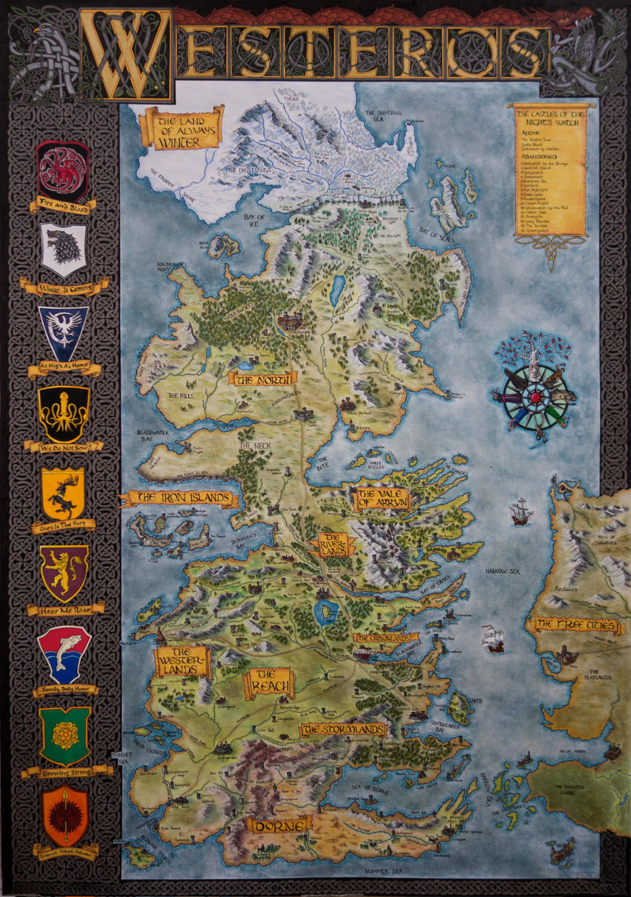

Livros
Explore nossa vasta coleção de livros sobre a história e os mistérios de Westeros e além.
 Manuscritos Antigos
Descubra os segredos guardados nos antigos manuscritos da Cidadela.
  Mapas e Registros
Conheça os mapas e registros que contam as histórias dos Sete Reinos.
  